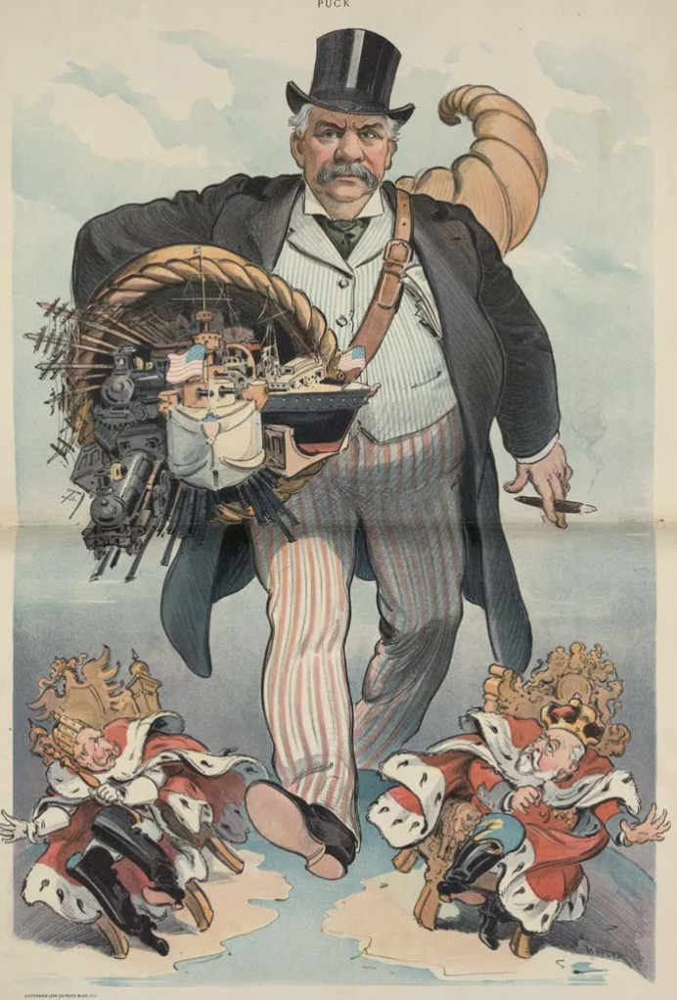

chapter2.2--handout
Background Information
President McKinley
威廉·麦金莱（William Mckinley，1843年1月29日-1901年9月14日）是美国第25任（第29届）总统。他18岁从军。南北战争结束后，22岁的他以少校军衔退伍，先后当过律师、县检察官、众议员和州长，1897年当选为总统。执政后，他采取提高关税和稳定货币的政策，加上其他措施，美国的经济有了很大起色，麦金莱从而获得“繁荣总统”的美名。对外发动美西战争。在布法罗被无政府主义者刺杀，享年58岁。麦金莱是美国立国后被刺身亡的第三位总统。
总统离世几小时后，年仅42岁的副总统西奥多·罗斯福（Theodore Roosevelt，1858年10月27日—1919年1月6日）放弃了登山旅行，从遥远的阿迪朗达克匆忙赶回。他来到安放已故总统遗体的房间，注视着这位倒下的领袖，悲伤不已。他低头默哀了几分钟，然后离开了这间屋子。
Charles M.Schwab
（伯利恒钢铁公司创始人）Bethlehem Steel，创立了世界第二大钢铁公司。年仅38岁的他被钢铁大王卡耐基任命接管美国钢铁公司，后来，还成功让陷入困境的伯利恒钢铁公司摆脱泥潭。查尔斯·施瓦布的话被企业家们视为箴言：
"I consider my ability to arouse enthusiasm among my people, the greatest asset I possess, and the way to develop the best that is in a person is by appreciation and encouragement. "
这句箴言的意思是：我认为我的能力是在人群中提高他们的热情度，这是我所拥有的最伟大的财富。而且，激发人们最大的潜能的方式在于对他们表达欣赏和鼓励。
“I am anxious to praise but loath to find fault. If I like anything, I am hearty in my approbation and lavish in my praise.”诚于嘉许，宽于称赞。 他还说道：我渴望去赞扬别人，当我要找出别人的错误的时候我是不情愿的。我的赞许都非常真诚，并且我愿意慷慨给予别人我的赞赏。
Andrew Carnegie
美国钢铁大王。出生于苏格兰，12岁时移居美国。工作后，他投入了自己所有的资产建立凯斯通桥梁工程公司，并极具眼光地展望到钢铁桥梁业具有不可限量的前景。于是他开始专门致力于钢铁生产行业，成为美国的钢铁大王。
安德鲁·卡耐基的成功之道是无论在公开场合还是私下交流，对于下属，他从来不吝啬赞美之词。他曾为自己的墓志铭写下： "Here lies one who knew how to get around him men who were cleverer than himself." （长眠于此之人，懂得如何与比他更睿智的人打交道）。
Mary Roberts Rinehart
一位多产的悬疑/侦探女作家，她开创了"早知如此(Had-I-But-Known)"流派，即后来的"女性悬念小说"，有"美国的阿加莎·克里斯蒂"之称。其成名作为《旋转楼梯》(The Circular Staircase)。
Vocabulary
insanity
💧精神错乱，精神失常。
💧例句：He was found not guilty of murder by reason of insanity.
他因为精神失常而未被判犯有杀人罪。
appalling
💧极坏的，糟透的。
💧例句：Prisoners were kept in the most appalling conditions.
犯人们被关押在条件极其恶劣的地方。
aristocracy
💧贵族，贵族阶级。例如members of the aristocracy即意为贵族阶级成员。
💧例句：I call them China's "New Aristocracy".
我把他们叫做中国的“新贵族”。
lavish
💧奢华的，豪华的。
💧例句：The lavish production makes this musical truly memorable.
这部音乐剧的豪华制作阵容给人留下了深刻印象。
epitaph
💧悼文，尤指墓志铭。原文He wrote an epitaph for himself... 意为他为自己写了墓志铭。
💧例句：His epitaph for himself would have well suited man as he wanted him to be.
他为自己写的墓志铭非常适合像他所期望成为的那种人。
Crush Your Problems
- Life once wrecked all her dream ships on the sharp rocks of reality; but in the sunny, fantasy isles of insanity, all her barkentines race into port with canvas billowing and winds singing through the masts.
句意：生活残酷地摧毁了她所有的希冀，她的梦想在现实的尖石上撞得粉身碎骨；但是在她自己的幻想之岛上，阳光终日和暖，船帆高高飞扬，海风围绕着桅杆欢唱。
💧本句中有一个but，but这个词出现，表示逻辑关系：
1）转折，前后之间的转折。比如：Some people think ice-cream is better than chocolate, but I think chocolate is better than ice-cream. 有些人认为冰淇淋比巧克力好吃，但是我认为巧克力比冰淇淋好吃。
2）but还可以表示一个前后文之间的对比。比如：We love peace, but we are not afraid of war.我们热爱和平，但是我们并不害怕战争。
原文在but前的内容大致说的是梦想被现实击碎；but之后的内容说大致是说在自己幻想岛上是多么美妙。二者形成鲜明的对比
💧另外，大家有没有发现，这句话中用了比喻（metaphor）和对比（contrast）的手法呢？用岛屿、船、礁石的意象表示情感，是不是很有画面感～大家也可以积极的用类似的修辞在自己的文章中哦～ - If some people are so hungry for a feeling of importance that they actually go insane to get it, imagine what miracle you and I can achieve by giving people honest appreciation this side of insanity.
💧 this side of 是固定搭配，来看下它的英文解释：before reaching a particular age, date, place, etc.
e.g. We don't expect to see Gideon this side of Chrismas. 在圣诞节前我们是见不到吉迪恩了。
所以这句大意为：如果人们对受重视的感觉，这样的迫切饥渴，甚至于真的成了精神失常只为获得它，试想若是在人们尚未疯癫前，就给他真诚的赞扬，那么我们又会实现什么样的奇迹呢？ - I have yet to find the person, however great or exalted his station, who did not do better work and put forth greater effort under a spirit of approval than he would ever do under a spirit of criticism.
💧I have yet to find the person 意思是到目前为止我还没有找到这么一个人，yet在这句话中表示但是。
However great or exalted his station, 无论这个人的社会地位（station）多么崇高，who did not do better work and put forth greater effort这句话中的who指代前面的person；under a spirit of approval than he would ever do under a spirit of criticism
所以句意：到目前为止，我还没有找到这么一个人，无论这个人的社会地位多么崇高，比起在批评的环境下，他在赞扬的环境中不会工作得更出色更努力（这句就是说，人在批评下很难表现出色，但如果多多给予赞美，效果就会好很多）。 - Here is his secret set down in his own words
- words that ought to be cast in eternal bronze and hung in every home and school, every shop and office in the land
- words that children ought to memorize instead of wasting their time memorizing the conjugation of Latin verbs or the amount of the annual rainfall in Brazil
- words that will all but transform your life and mine if we will only live them
句意：以下是他的原话来描述他的秘密，—这些话应该被镌刻在铜匾上，并在这个地球上的每个家庭、每所学校、每一间商铺以及每一间办公室的墙上悬挂，—这些话孩子们应该铭刻于心，而不是浪费时间去死记哪些拉丁语的动词组合，或者是巴西的全年降水总量，—这些话几乎能够使你我的人生改观，如果我们依据这些话身体力行。
💧Here is his secret set down in his own words
还记得这个倒装结构吗？将主语放在谓语后，表示强调。在我们日常生活中，也会经常有这样的例子：Here comes the bus.
💧－words that ought to be cast…－words that children ought to….—words that will all but transform…
这是一个平行并列的用法（parallelism），三个words都是在解释说明他的话是如何的
💧words that will all but transform your life and mine
all but是一个固定搭配，表示几乎,表示这些话几乎会使你我的人生彻底改观
if we will only live them
live的本意是生存、生活，在这里表示在生活中去运用这些话。 - Here lies one who knew how to get around him men who were cleverer than himself.
💧 这句话正常语序为One know how to get men （who were clever than himself ）around him (lies here). 由于从句放在了句尾，为了更清楚的体现是在修饰先行词men所以做了个倒装的处理变成了 around him men who...
💧 句意：长眠于此的人(躺着的人)知道如何与比他更为睿智的人相处。
Content Analysis
今天，我们继续讨论人际关系中的big secret-the feeling of importance 的重要性。
先来看昨天说到，获取重视感的第四点：不惜任何代价，强行寻找存在感。
Mrs. McKinley. 麦金利夫人，美国第25任总统麦金利的妻子，要总统取消与国务卿的会面去陪自己看牙医，要总统不处理政事哄自己睡觉。
除了这些名人，普通人也会寻找所谓的被重视感，比如有一个姑娘为了获得母亲的照顾，一直装的病恹恹，母亲离世后，她的“病”也就不治而愈了。
然后，作者提出了一个问题：What is the cause of insanity?
50%的精神病来自物理病因（physical causes as brain lesions, alcohol, toxins and injuries）脑损伤，酒精和药物服用失当。
而另外50%的精神病患者，则完全没有任何与脑细胞有关的器官病变。即使你在精神病患者死后,用高倍显微镜去检查他们的大脑，也不会发现任何异常。
(In post-mortem examinations, when their brain tissues are studied under the highest-powered microscopes, these tissues are found to be apparently just as healthy as yours and mine.)
接下来，作者继续发问：Why do these people go insane? 一个著名的精神病学家表示 “many people who go insane find in insanity a feeling of importance that they were unable to achieve in the world of reality.”
也就是说，当人们在残酷的现实中得不到存在感的时候，会精神崩溃，转而在疯癫的幻境中追寻。
这位专家又给作者讲了一个凄美的故事，有关于Lady Smith的。医生不忍心戳破她的幻境，因为她活在自己的世界里，那个世界对她来说是快乐的。
然后，作者写道“If some people are so hungry for a feeling of importance that they actually go insane to get it, imagine what miracle you and I can achieve by giving people honest appreciation this side of insanity.”
通过这句话，作者引出了“真诚的赞美是多么的重要”。
那么到底赞美对人的影响有多大呢？
无论一个人社会地位多么崇高，在批评下是很难表现出色，而赞美能激发员工的积极性，提升工作效率，甚至可以挽救一个濒临破产的公司。最后作者举例了查尔斯•施瓦布和安德鲁•卡耐基的例子说明这点。
Today's Bonus
这一讲中出现的查尔斯施瓦布，安德鲁卡耐基和J.P.摩根是20世纪初美国金融业的三大巨头。关于前两位，这一讲中已经有过介绍，那我们现在就来看看第三位吧！
约翰·皮尔庞特·摩根（John Pierpont Morgan Sr.，1837年4月17日－1913年3月31日），美国银行家，亦是一位艺术收藏家。1892年，他撮合了爱迪生通用电力公司与汤姆逊-休士顿电力公司合并成为通用电气公司。在出资成立了联邦钢铁公司后，他又陆续合并了卡内基钢铁公司及几家钢铁公司，并在1901年组成美国钢铁公司。1912年，著名的泰坦尼克号便是约翰·皮尔庞特·摩根所出资建造的。
当时，在美国钢铁企业的排行榜中，坐第一把交椅的仍是钢铁大王卡内基，摩根排在第二，第三是那个在五大湖周围一直到南方大肆购买铁矿山并插手制铁业的洛克菲勒。 摩根与卡内基两人一向交恶，这大约是由于“一山不容二虎”吧。当摩根急欲全面控制钢铁业时，更觉得横在路中的卡内基是个讨厌的庞然大物。但摩根知道此事不能性急，想要吃掉卡内基的庞大产业必须等待机会的出现。
1898年，卡耐基因为家庭突遭变故，对商场失去兴趣，打算隐退。于是摩根找准时机，与当时的新总裁施瓦布谈判，最终在1901年4月1日，U.S.钢铁正式成立。

对于这三位金融巨头我们就都了解完啦！现在金融行业是一个越来越流行的领域了，你自己最想从事哪方面的职业呢？欢迎跟老师分享哦！并要跟老师分享为什么想做这份工作，希望今天你也能度过能量满满的一天！